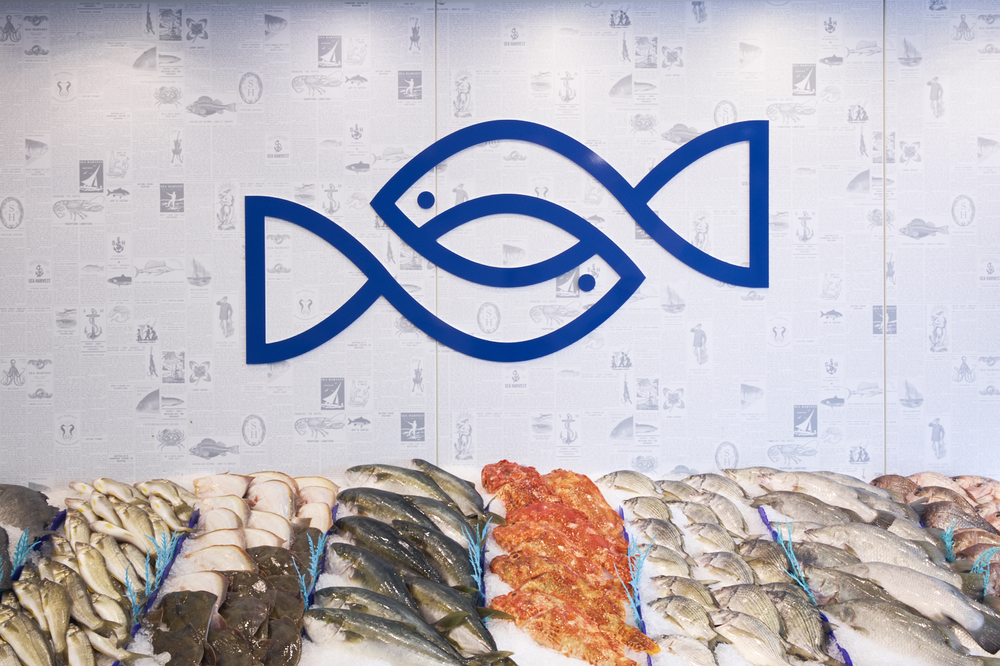
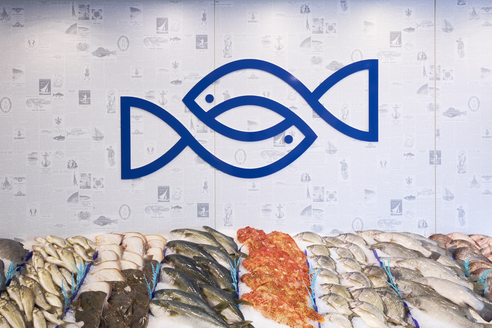

YOUR LOCAL FRESH SEAFOOD MARKET
BRINGING THE COAST TO CANBERRA

Our family business has been serving the Canberra community for over four decades.
The Sea Harvest story begins in the 1800s on a small, picturesque fishing island called Lefkada in Greece. For generations since, our love of the sea and taste for seafood has endured, following us to Canberra where we settled in the 1970s. For over 40 years now, we have dedicated ourselves to bringing the finest and freshest Australian seafood to our nation’s capital.
We supply seafood restaurants, seafood wholesale services – including Seven Seas and Blue Seas – and sell to the public via permanent stores at the Belconnen and Fyshwick markets.
Our knowledge of seafood spans decades, as do our relationships with some of the bestfisheries in the country.
We offer a wide variety of seafood at the very best prices, including:
- Tasmanian Salmon
- Northern Territory Barramundi
- Southern Coast Snapper, Octopus, and Calamari
- Bermagui Kingfish
- WA and Tassie Lobster
- Merimbula Rock Oysters
- Tasmanian and Coffin Bay Oysters
- Exmouth and Queensland Tiger Prawns
- Southern and Coffs Harbour King Prawns
- Eden Mussels and Blue Swimmer Crabs
- Snowy Mountains Rainbow Trout
- Port Lincoln Sardines
- Pilbara Red Emperor, Threadfin Bream, and Rock Cod
- A huge selection of fresh seasonal fish

 
